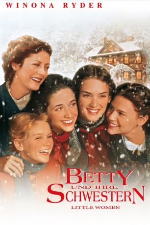

#6957 Betty und ihre Schwestern
Alternativ: Little Women
Auszeichnungen: für 3 Oscars nominiert
 
 IMDB-Wertung: 7.3 / 10
IMDB-Wertung: 7.3 / 10  Metascore: 0
Metascore: 0 
Auf dem Roman Little Women von Louisa May Alcott basierendes Familiendrama, das von vier Schwestern handelt, deren Vater im amerikanschen Bürgerkrieg kämpft. Die Mutter kümmert sich sorgsam um ihre Töchter, die die kritische Zeit des Erwachsenwerdens durchmachen.
Jahr: 1994
Dauer: 113 Minuten
FSK: 6
Land: USA Studio: Columbia PicturesTonspuren: DD2.0 - ,
Untertitel:
Auflösung: 1080p (1920x1040) Größe: 11878 MB
Genre: Drama, Familie, Liebe
Regisseur: Gillian Armstrong
Drehbuch: Louisa May Alcott
Soundtrack:
Darsteller:
 Winona Ryder als Jo March
Winona Ryder als Jo March Gabriel Byrne als Friedrich Bhaer
Gabriel Byrne als Friedrich Bhaer- Trini Alvarado als Meg March
 Samantha Mathis als Older Amy March
Samantha Mathis als Older Amy March Kirsten Dunst als Younger Amy March
Kirsten Dunst als Younger Amy March Claire Danes als Beth March
Claire Danes als Beth March Christian Bale als Laurie
Christian Bale als Laurie Eric Stoltz als John Brooke
Eric Stoltz als John Brooke John Neville als Mr. Laurence
John Neville als Mr. Laurence Mary Wickes als Aunt March
Mary Wickes als Aunt March Susan Sarandon als Mrs. March
Susan Sarandon als Mrs. March Rebecca Toolan als Mrs. Gardiner
Rebecca Toolan als Mrs. Gardiner- Janne Mortil als Sally Moffat
- Sarah Strange als Sally's Friend
- Michele Goodger als Hortense
- Janie Woods-Morris als Boston Matron
- Alan Robertson als Dr. Bangs
- Mar Andersons als Fred Vaughan
- Cameron Labine als Averill
 Matthew Walker als Mr. March
Matthew Walker als Mr. March- Bethoe Shirkoff als Art Teacher
 Marilyn Norry als Mrs. Kirk
Marilyn Norry als Mrs. Kirk Andrea Libman als Kitty Kirk
Andrea Libman als Kitty Kirk Tegan Moss als Minnie Kirk
Tegan Moss als Minnie Kirk- Janet Craig als Miss Norton
 Beverley Elliott als Irish Maid
Beverley Elliott als Irish Maid- James Leard als Office Worker
 Jay Brazeau als Dashwood
Jay Brazeau als Dashwood Demetri Goritsas als Bhaer's Student
Demetri Goritsas als Bhaer's Student- David Adams als Opera Singer 'Nadir'
 Donal Logue als Jacob Mayer
Donal Logue als Jacob Mayer- Scott Bellis als John McCracken
 Eric Bruno Borgman als Returning Civil War Soldier , uncredited
Eric Bruno Borgman als Returning Civil War Soldier , uncredited- Florence Paterson als Hannah
- Robin Collins als Carriage Boy
- Corrie Clark als Belle Gardiner
- Curt Willington als Red Haired Young Man
- Billie Pleffer als Naughty Girl
- Louella Pleffer als Naughty Girl
- Ahnee Boyce als Sally's Friend
- Marco Roy als Mr. Parker
- A.J. Unger als Ned Moffat
- Patricia Leith als Boston Matron
- Christine Lippa als Mrs. Hummel
- Kristina West als Hummel Child
- Nicole Babuick als Hummel Child
- Jenna Percy als Hummel Child
- Charles Baird als Office Worker
- Kate Robbins als Opera Singer 'Leila'
 John Shaw als Charles Botts
John Shaw als Charles Botts
Datei: X:\1994\Betty und ihre Schwestern (1994, FSK6, 1920x1040).mkv seit 12.09.2017
Festplatte: HD 1992-1995
 Es gibt insgesamt 67 Filme in der Gruppe '1994'
Es gibt insgesamt 67 Filme in der Gruppe '1994'